土地を見る
まずはマップを観察。水源の位置や、荒れ地の広がりを確認します。

ABOUT THE GAME
最初の土地は、ほとんどが荒れ地です。
限られた資源を使って水路や浄化、緑化などを行うと、
少しずつ土地の環境が変わっていきます。
環境が整えば、そこには生き物も戻ってきます。
ひとつの変化が次の変化を呼び、やがて小さな生態系ができあがっていきます。
HOW TO PLAY
まずはマップを観察。水源の位置や、荒れ地の広がりを確認します。
装置を使って水路→沼地→草地→森林を作り上げ、自然が育つ土台をつくります。
環境が整うと、魚やカエル、昆虫などが少しずつ現れます。
生き物や植物が増えることで、さらに別の生き物が暮らせる環境が生まれます。
A LIVING WORLD
このゲームでは、生き物を直接配置するのではありません。
住みやすい環境をつくることで、生き物が自然に現れていきます。
※ 生き物の出現には、それぞれ異なる環境条件があります。
YOUR TOOLS
水源から水を引き、土地に水の流れをつくります。水路の周辺では湿地も生まれていきます。
水辺の近くを整え、周囲に湿地を広げます。
湿地を草地へ変え、より豊かな陸地をつくります。
広がった草地に森をつくります。森はより多くの生き物が暮らす場所になります。
設置した人工物を取り除き、自然に戻します。
TIPS
BEGINNER GUIDE
ゲームを始めたら、まずは装置を使って土地の環境を少しずつ変えていきましょう。
「次は何をすればいい？」となったら、下の流れを参考にしてみてください。
水源から水を引いて、水の流れをつくります。
水辺の周囲に湿地を広げて、生き物が暮らせる環境をつくります。
湿地を草地へ変えて、さらに豊かな環境へ進めます。
草地を森林へ変えて、より多くの生き物が暮らせる場所をつくります。
必要なくなった装置は撤去して、土地を自然な状態に戻します。
装置ボタンをクリックすると、設置できる場所が赤く表示されます。
あとは実際に遊びながら、感覚的に操作してみよう！
GOAL
草地や森を増やし、魚や昆虫、鳥、哺乳類などが暮らせる環境を整えます。
必要な条件がそろった状態をしばらく維持できれば、ゲームクリアです。
さあ、荒れた土地に生命を取り戻そう。
▶ ゲームをプレイ